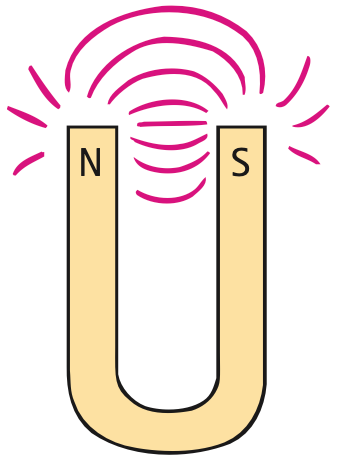
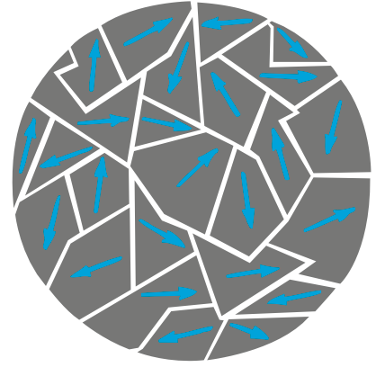

Magnetism and Magnetic Fields
Mathematical idea: Field diagrams use arrow direction and line spacing to represent magnetic direction and relative strength.
You will connect pole interactions to field-line evidence, then zoom inside magnetic materials to explain how domains create or cancel an overall magnetic effect.
Learning Target
Students will explain magnetic poles, magnetic fields, and magnetic domains using field models and everyday magnetic interactions.
I can statements
- I can explain that magnets have north and south poles.
- I can describe how like magnetic poles repel and unlike magnetic poles attract.
- I can explain that magnetic field lines show the direction and relative strength of a magnetic field.
- I can explain why magnetic poles are not isolated as single north or south poles.
- I can describe magnetic domains and how their alignment affects whether a material acts like a magnet.
- I can interpret simple magnetic field diagrams around bar magnets and pairs of magnets.
Vocabulary
These are words you will see in this section. Do not define them yet.
- magnetism
- magnetic force
- magnetic pole
- north pole
- south pole
- magnetic field
- magnetic field line
- magnetic domain
- magnetization
- electromagnetism
Use the preview activity to decide which words you already know, recognize, or do not know yet. Watch for these words in bold when they are first introduced or defined in the reading.
Preview: Skim Before You Read
Directions
Before reading closely, skim the vocabulary list and the section. Look at titles, headings, bold words, pictures, captions, diagrams, tables, and formulas. Do not try to understand everything yet. Your job is to notice what already looks familiar and make predictions about what this section may explain.
Step 1 — Sort the vocabulary. Write each vocabulary word in the column that best matches what you know right now. You may move a word later.
| Know for sure | Recognize | Don’t know yet |
|---|---|---|
Step 2 — Skim the section. Record what catches your attention before you read closely.
| What I noticed | |
|---|---|
| What I predict | |
| What I wonder |
Content: Read, Look, Annotate, Apply
Directions
Read in short chunks. Annotate the prose and the figures together: underline evidence, circle or highlight bold vocabulary, label arrows or measured features, connect a sentence to an image, and write short questions or connections in the margins.
Reading 1: From magnetic effects to magnetic poles
Magnetism is the collection of effects associated with magnets and with moving electric charge. Long before the connection to electricity was understood, people knew that lodestone could attract iron and that a magnetized needle could be used for navigation. The striking feature is action at a distance: the magnet can pull or push without direct contact.
In the source, Oersted’s classroom observation becomes a turning point. A current changed the direction of a nearby compass. That evidence connected electricity to magnetism and supports the larger idea of electromagnetism: electric and magnetic effects are related parts of one physical picture. The source also emphasizes that motion matters. A magnetic force is associated with moving charge, usually electrons.
On an ordinary magnet, the strongest interactions are concentrated in regions called a magnetic pole. A freely suspended magnet settles with one end pointing generally north and the other south. Those ends are called the north pole and south pole.

Image read: Label the two pole regions. Trace where you would expect the strongest interaction with a second magnet to occur.
The horseshoe shape does not create a new kind of magnet. It bends a bar magnet so its two pole regions are closer together. The important evidence is that both pole types are still present. This prepares us to compare what happens when different poles are brought near one another.
Stop and Discuss
- What evidence from Oersted’s observation connects electricity and magnetism?
- Using the horseshoe-magnet image, where are the north and south pole regions, and why are they called pole regions rather than separate magnetic charges?
Example 1: Name the interaction
A bar magnet is suspended so it can rotate freely. Its marked north end points toward geographic north.
- Identify the two magnetic poles on the bar magnet.
- Explain why this observation is evidence for an organized magnetic effect rather than a contact force.
You Try It 1: A U-shaped magnet
A U-shaped magnet is labeled N on one tip and S on the other.
- Which regions are the magnetic poles?
- Predict where an iron paper clip would experience the strongest attraction and explain your prediction.
Reading 2: Attraction, repulsion, and why poles come in pairs
Magnetic interactions follow a simple pattern: like pole types repel, while unlike pole types attract. That resemblance to electric charge is useful, but the comparison has a limit. Electric positive and negative charge can be separated. Known magnets do not behave as isolated north-only or south-only pieces.
If a bar magnet is broken, each piece becomes a smaller complete magnet. Breaking again makes more complete magnets. The source uses this observation to emphasize that magnetic poles occur in pairs. Cutting a magnet does not collect all north behavior in one piece and all south behavior in another.

Image read: Compare the two panels. Circle the region where lines connect across the gap in the attraction case, and mark the region where the patterns bend away from one another in the repulsion case.
The pattern is evidence for the interaction, not a picture of physical strings. In the unlike-pole case, the field pattern joins smoothly through the space between magnets. In the like-pole case, the patterns do not join the same way. These differences help us predict attraction or repulsion from a diagram even when the magnets themselves are not shown moving.
This also gives a useful misconception check: “north attracts everything magnetic” is false. A north pole attracts a south pole but repels another north pole. The correct prediction depends on both nearby pole types.
Stop and Discuss
- What feature in the two-panel image distinguishes the unlike-pole case from the like-pole case?
- If a bar magnet is cut in half, what poles should each piece have? Explain using the source evidence.
Example 2: Predict pole behavior
Two bar magnets are arranged with a north pole facing a south pole across a small gap.
- Predict whether the magnets attract or repel.
- Describe one field-pattern feature that would support your prediction.
You Try It 2: Cutting a magnet
A student cuts a bar magnet into three short pieces and claims the left piece is only north while the right piece is only south.
- Correct the student’s model.
- Describe the pole pattern each of the three pieces should have.
Reading 3: Magnetic fields as models of direction and strength
The space around a magnet contains a magnetic field, a region where magnetic effects can be detected. Iron filings make the pattern visible because many tiny pieces of iron become aligned by the field. A drawn magnetic field line represents the direction the north end of a tiny compass would point at that location.
Outside a magnet, the field direction is from the magnet’s north pole toward its south pole. The spacing of field lines is also meaningful: closer lines represent a stronger field. This is why field diagrams usually show the greatest concentration near a magnet’s poles.

Image read: Mark the two places where the filings are most concentrated. Draw arrows on two imagined field lines to show the outside-field direction from N toward S.
A compass is a small magnet that can rotate. If it is not aligned with the local field, magnetic forces on its poles produce a turning effect until it lines up. That makes a compass a field detector: its orientation provides evidence about direction at one point in space.

Image read: Compare the tilted needle with the aligned needle. Identify what changes and what stays the same as the needle rotates.
A field diagram is therefore a model that combines two ideas. Arrow direction tells which way a north test pole would tend to point, while line density gives relative field strength. The lines themselves are not material objects.
Stop and Discuss
- What two pieces of information can you read from a magnetic-field-line diagram?
- How does the compass figure provide evidence that field direction is meaningful at each location?
Example 3: Read a field diagram
A field drawing has tightly packed lines near the end of a bar magnet and widely spaced lines farther away.
- Where is the magnetic field stronger?
- What would a small compass tell you if placed at one of those locations?
You Try It 3: Field evidence from filings
Iron filings around a magnet form a dense pattern near one end and a sparse pattern far away.
- Compare the relative field strength in the two regions.
- Explain why the filings are evidence for a field but are not the field itself.
Reading 4: Domains and magnetization inside materials
To explain why some pieces of iron are magnets and others are not, the source moves from the large-scale field to a microscopic model. In iron, neighboring atoms can form regions whose magnetic effects point in a common direction. Each such region is a magnetic domain.

Image read: Count several differently oriented arrows. Explain why many strong local magnetic regions can still produce little overall magnetism when their directions are mixed.
In ordinary iron, many domains point in different directions, so their effects largely cancel. A nearby strong magnet can cause more domains to line up. That increase in alignment is magnetization. Soft iron tends to lose much of the alignment when the external field is removed, while some materials retain more of it and can become permanent magnets.

Image read: Follow the sequence from unmagnetized to strongly magnetized iron. Then inspect the broken pieces and mark the north and south ends on each.
The domain model connects several earlier observations. It explains how a neutral-looking piece of iron can be attracted when nearby domains realign, how stroking or placing iron in a strong field can make a magnet, and why heating or dropping a magnet can weaken it by disturbing domain alignment. It also reinforces the paired-pole idea: aligned domains create an overall north end and south end rather than one isolated pole.
Stop and Discuss
- How can a piece of iron contain magnetic domains but still not act like a strong magnet?
- Use the second image to explain what changes during magnetization and what happens to poles when a magnet is broken.
Example 4: Magnetize an iron nail
An iron nail is brought close to a strong permanent magnet and begins attracting paper clips.
- Use domains to explain why the nail becomes magnetic near the magnet.
- Predict what may happen to the domain alignment when the permanent magnet is moved far away.
You Try It 4: A weakened magnet
A permanent magnet is repeatedly dropped and becomes weaker.
- Describe a domain-level change that could explain the weaker magnetic effect.
- State what should still be true about its north and south poles.
Vocabulary: Define the Terms
You have now seen these words in the reading, images, and practice. Use this table to consolidate the physics meaning of each term.
| Vocabulary term | Definition |
|---|---|
| magnetism | Magnetic effects produced by magnets and moving electric charge. |
| magnetic force | A force associated with magnetic fields and moving charge or magnetic poles. |
| magnetic pole | A region of a magnet where magnetic interactions are strongest. |
| north pole | The pole of a freely suspended magnet that points generally north. |
| south pole | The opposite magnetic pole, paired with a north pole. |
| magnetic field | A region around a magnet or moving charge where magnetic effects can be detected. |
| magnetic field line | A model line whose direction shows the local magnetic-field direction and whose spacing represents relative strength. |
| magnetic domain | A microscopic region in a magnetic material where many atomic magnetic effects are aligned. |
| magnetization | An increase in overall magnetic behavior caused by greater domain alignment. |
| electromagnetism | The connected physical description of electric and magnetic effects. |
Summary
- Magnets have north and south poles; like poles repel and unlike poles attract.
- Known magnetic poles occur in pairs, so breaking a magnet produces smaller complete magnets.
- Magnetic-field lines model direction, while closer line spacing represents stronger field.
- Compasses and iron filings provide evidence about magnetic-field direction and pattern.
- Magnetic domains explain how iron can become magnetized when many domains align.
- Magnetism and electricity are linked through moving electric charge.
Common Mistakes
| Mistake | Why it is tempting | Check instead |
|---|---|---|
| Treating north and south poles like separable electric charges | The attraction/repulsion rule resembles electric charge. | Remember: breaking a magnet produces new north–south pairs. |
| Thinking field lines are physical strings | Diagrams make them look like objects. | Use lines only as a model for direction and relative strength. |
| Assuming all iron is already a strong magnet | Iron contains magnetic domains. | Ask whether the domains are mostly aligned or randomly oriented. |
| Saying a north pole attracts every magnet | North can attract or repel. | Identify the pole facing it: unlike attracts, like repels. |
What two pole types must be present on an ordinary magnet?
A domain diagram changes from randomly oriented arrows to mostly aligned arrows. What change in magnetic behavior should result, and why?
What is one thing you learned in this section? Explain it in at least one complete sentence.
What is one thing from this section you still need to understand or practice more? Be specific.